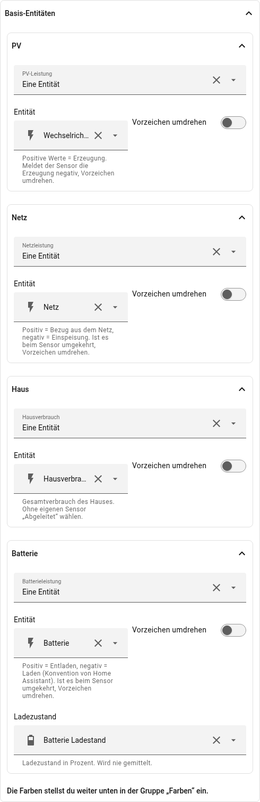
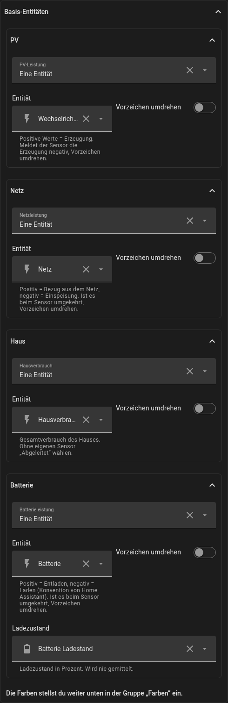
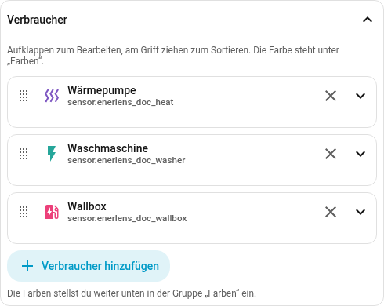
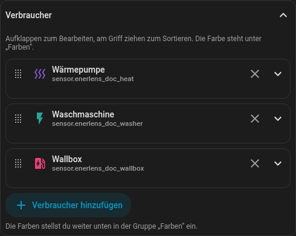
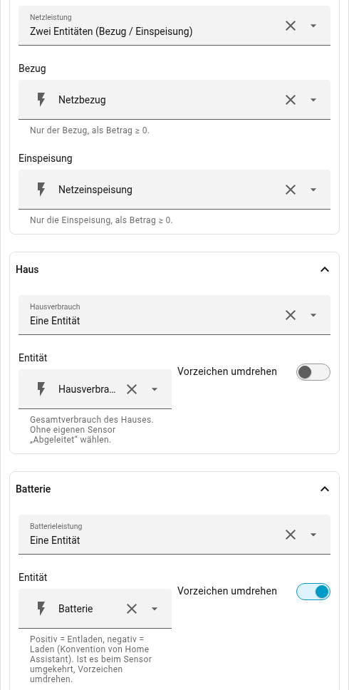
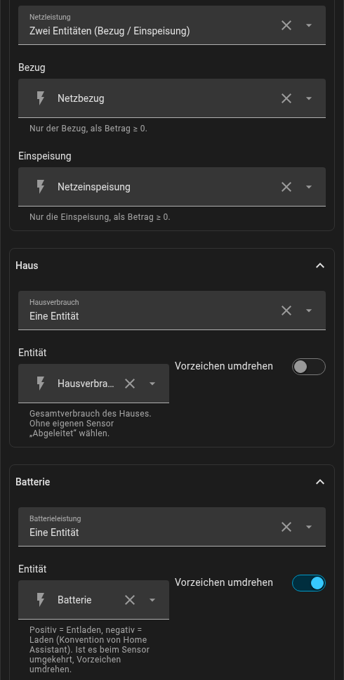

Einrichtung
Die Karte bringt einen GUI-Editor mit. Jede Entitätsform unten — eine Entität, eine mit umgedrehtem Vorzeichen, zwei Entitäten oder eine abgeleitete Größe — ist im Formular eine Auswahl; YAML braucht es also nie. Nur die Verbraucher- palette bleibt dem YAML vorbehalten. Das YAML ist für alle dokumentiert, die es vorziehen.
Eine über das Dashboard neu angelegte Karte rät deine Sensoren nicht: Sie
startet mit den Platzhaltern sensor.solar_power und sensor.grid_power und
zeigt gekennzeichnete Beispielwerte, bis du deine eigenen auswählst.
Im Editor
Unter Basis-Entitäten wählst du für PV, Netz, Haus und Batterie je die Leistungs-Entität. Die Auswahl darüber legt die Form fest: Eine Entität, Zwei Entitäten, Abgeleitet aus den anderen Größen oder bei der PV Mehrere Quellen (je Wechselrichter). Mit Batterie kommt der Ladezustand dazu.

Die Verbraucher stehen in einer eigenen Liste darunter: Verbraucher hinzufügen, Entität wählen, fertig. Jeder Eintrag klappt auf für Name, Icon, eine eigene Schwelle und den Ladestand eines Autos; die Reihenfolge lässt sich durch Ziehen ändern.


Minimal
type: custom:enerlens-card
entities:
solar: sensor.pv_leistung
grid: sensor.netz_leistung
house: sensor.hausverbrauchMit Batterie und Verbrauchern
type: custom:enerlens-card
title: Energie
entities:
solar: sensor.pv_leistung
grid: sensor.netz_leistung
house: sensor.hausverbrauch
battery: sensor.batterie_leistung
battery_soc: sensor.batterie_ladezustand
consumers:
- entity: sensor.waermepumpe_leistung
name: Wärmepumpe
- entity: sensor.waschmaschine_leistung
- entity: sensor.kuehlschrank_leistung
max_consumers: 5Vorzeichen
Die Karte folgt der Konvention von Home Assistant — derselben, die auch
power-flow-card-plus und das Energie-Dashboard verwenden:
| Größe | Positiv | Negativ |
|---|---|---|
|
Bezug aus dem Netz |
Einspeisung |
|
Entladen |
Laden |
Meldet dein Sensor es andersherum — viele Wechselrichter geben die Einspeisung positiv aus — lässt sich das je Entität umkehren:
entities:
grid:
entity: sensor.netz_leistung
invert: trueIm Editor ist das der Schalter Vorzeichen umdrehen bei der Entität, bei getrennten Sensoren die Auswahl Zwei Entitäten:


Wer statt eines signierten Sensors getrennte Sensoren je Richtung hat, nennt beide. Erwartet werden Werte ab null:
entities:
grid:
import: sensor.netz_bezug
export: sensor.netz_einspeisung
battery:
discharge: sensor.batterie_entladen
charge: sensor.batterie_ladenEine Entität oder zwei? Wenn deine Anlage beides hergibt — einen vorzeichenbehafteten Sensor und ein Paar je Richtung — nimm das Paar. Ein Tipp auf Netz oder Batterie öffnet dann ein Fenster mit beiden Richtungen in einem Diagramm: Bezug bzw. Entladen nach oben, Einspeisung bzw. Laden nach unten, bei der Batterie der Ladestand darunter. In der Leistungsansicht zeigt es wie der Verlauf von Home Assistant das 5-Minuten-Mittel und blass die Spanne vom kleinsten bis zum größten Wert, im Energie-Modus die kWh je Stunde oder Tag (siehe Energie). Auch der Energie-Modus kann nur mit einem Paar beide Richtungen zeigen. Mit einem vorzeichenbehafteten Sensor öffnet der Tipp dessen eigenen Verlauf aus Home Assistant.